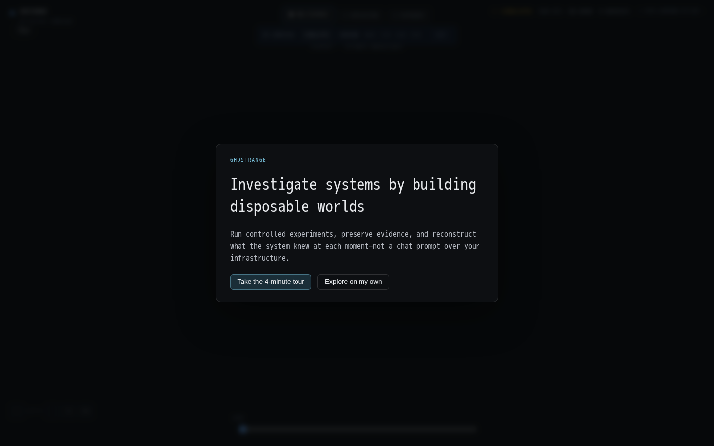
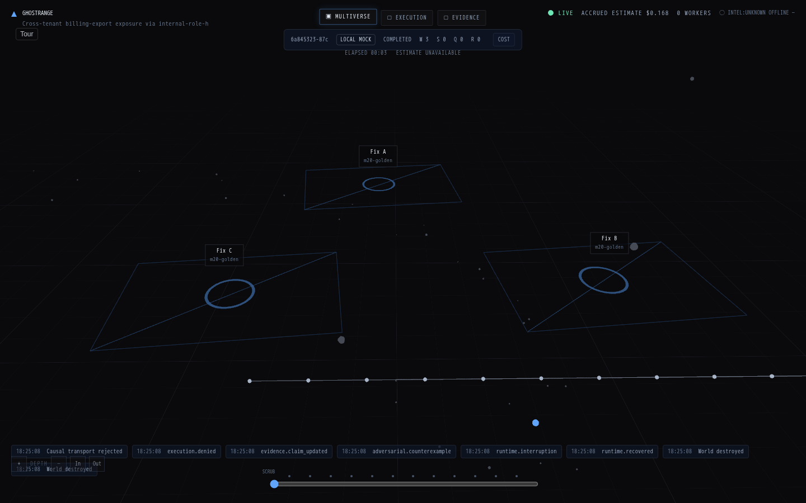
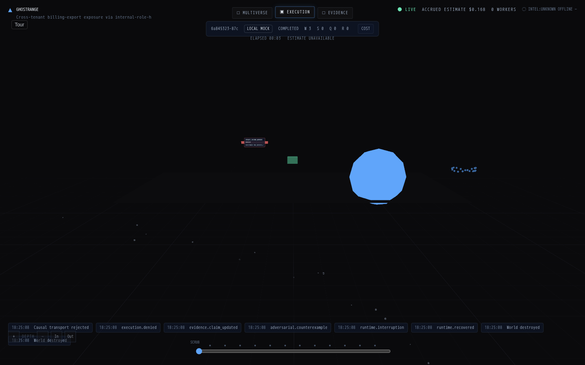
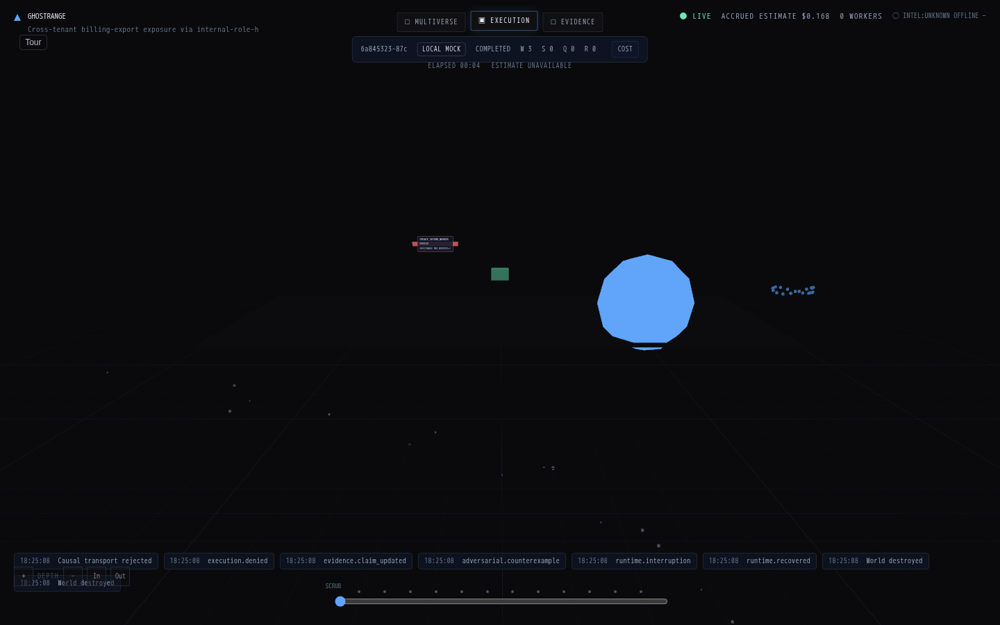
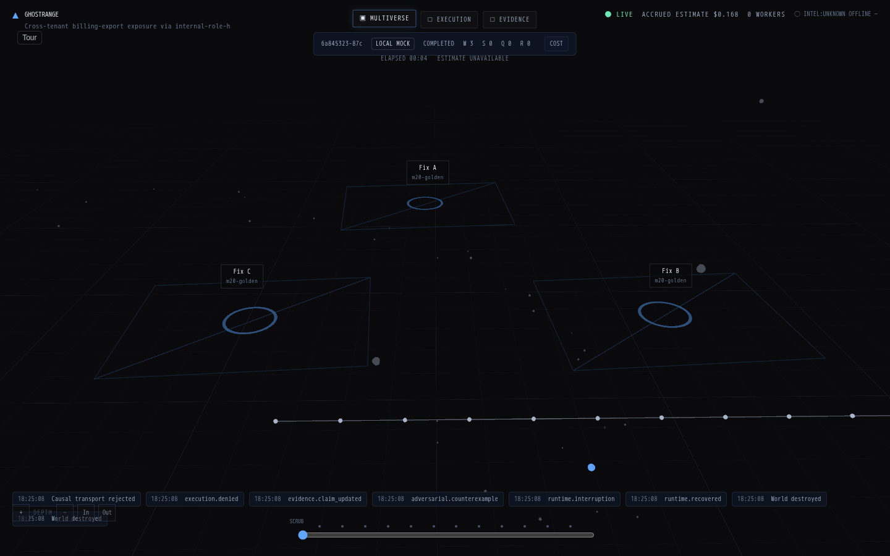
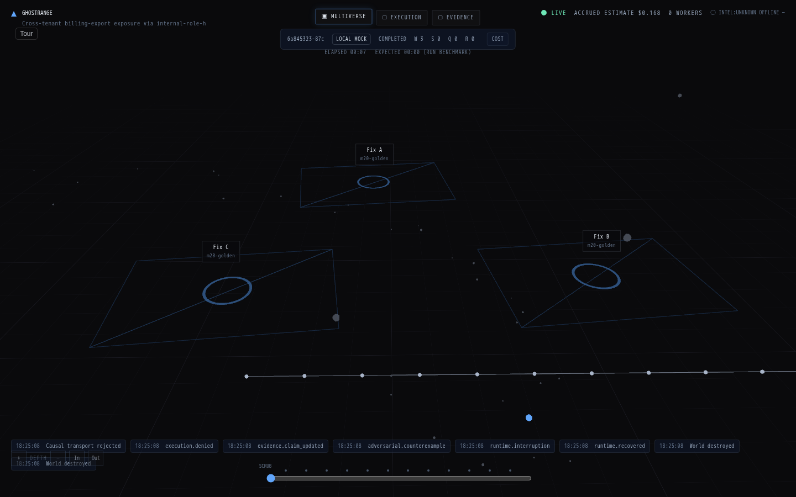
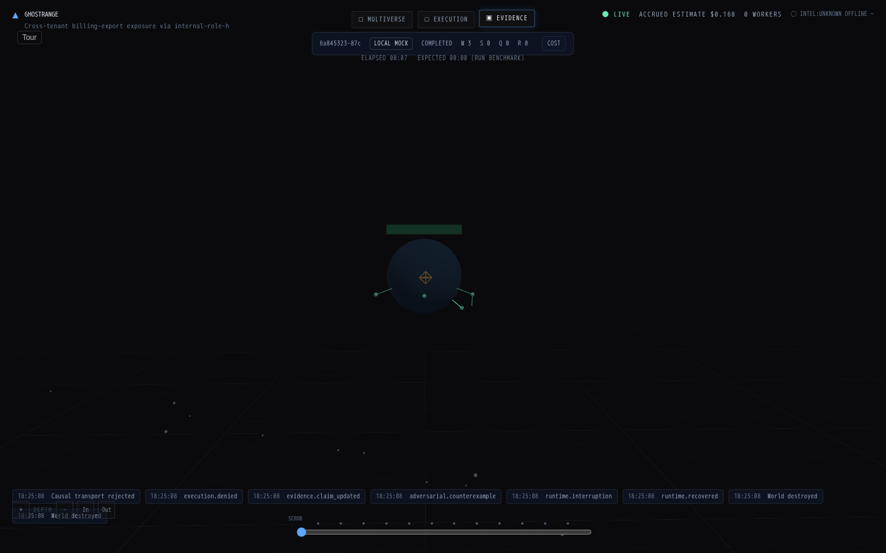
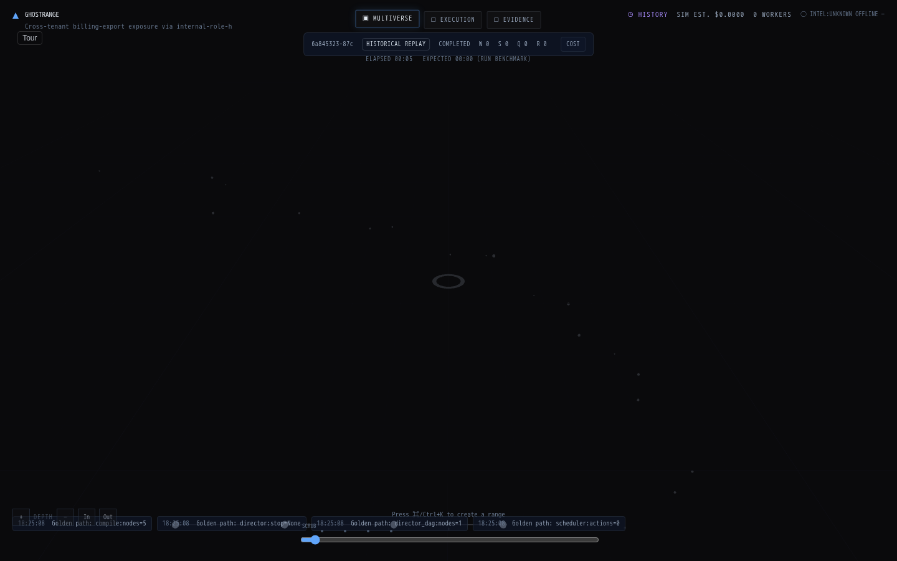
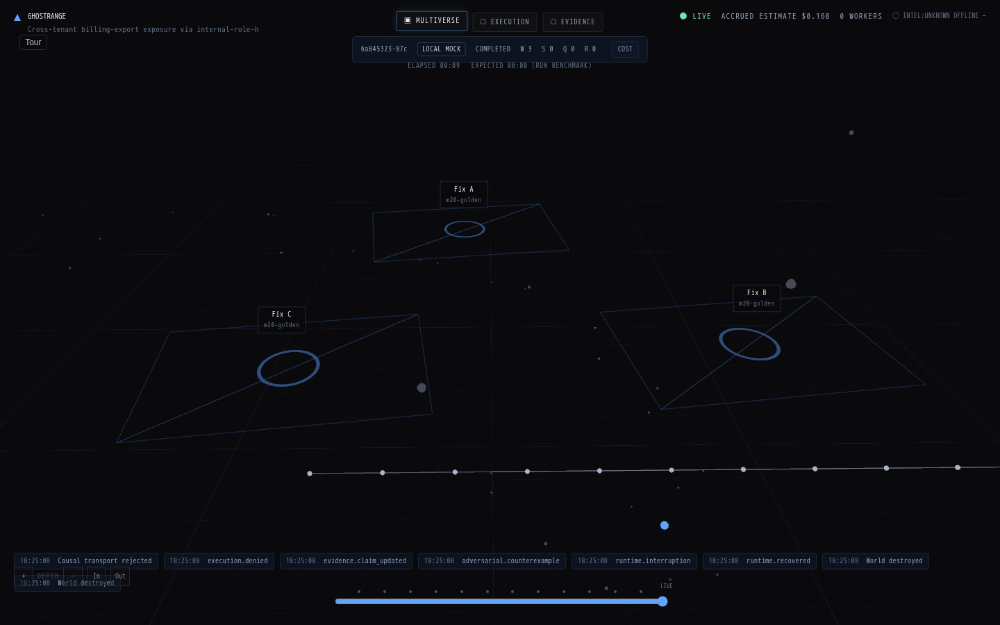
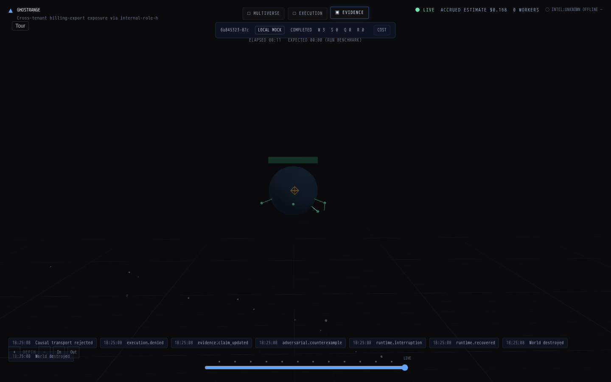

| Preview | File | Conn | Seq | Semantic |
|---|---|---|---|---|
 | 01-empty.png | FIXTURE | 0 | initial_offline_or_empty |
| 02-production-world.png | LIVE | 66 | hasActiveWorld|events>=8 | |
 | 03-attack-path.png | LIVE | 66 | attackCount>=1 |
| 04-hypotheses.png | LIVE | 66 | director_scheduler_events |
| 05-world-focus.png | LIVE | 66 | multiverse_overview |
 | 06-execution-dag.png | LIVE | 66 | execution_mode |
 | 07-worker-provisioning.png | LIVE | 66 | workerProvisioning|m2_pipeline |
| 08-cpu-gpu-decision.png | LIVE | 66 | scheduler_decision_present |
| 09-speculation.png | LIVE | 66 | scheduler_plan |
| 10-scale-out.png | LIVE | 66 | single_worker_policy |
| 11-failure.png | LIVE | 66 | runtime.interruption |
| 12-recovery.png | LIVE | 66 | runtime.recovered |
 | 13-causal-surprise.png | LIVE | 66 | hasCausal |
| 14-counterfactual.png | LIVE | 66 | forkCount>=1 | |
| 15-remediation-comparison.png | LIVE | 66 | forkCount>=1 |
| 16-counterexample.png | LIVE | 66 | adversarial.counterexample |
| 17-action-gate.png | LIVE | 66 | authorizationGate |
 | 18-action-denied.png | LIVE | 66 | authorizationDenied |
| 19-evidence-constellation.png | LIVE | 66 | evidence_mode |
| 20-verification.png | LIVE | 66 | verificationRing|campaign_complete |
 | 21-arena-qualification.png | LIVE | 66 | arenaQualification |
 | 22-history.png | REPLAY | 0 | timeline_scrub |
 | 23-final-teardown.png | LIVE | 0 | workerCount===0|timeout |
 | 24-final-golden-path.png | LIVE | 0 | campaign_complete_composition |